Proprietary to General Electric
Direction 5500113, Rev# 3
Discovery MR450 1.5T Service Methods
Module Version 16.0, Version Date 8/27/10
Proprietary to General Electric |
| Required Persons | Preliminary Reqs | Procedure | Finalization |
|---|---|---|---|
| 1 | Not Applicable | 2 hours | Not Applicable |
The index below lists the Planned Maintenance procedures covered in this document.
| Planned Maintenance Procedures Index |
| Item | Qty | Effectivity | Part# | Manufacturer | |
|---|---|---|---|---|---|
| LVShim Phantom Assembly for Image Quality Tests | 1 | 3.0T G3 | 2360049, 2360050, 2360051 | - | |
| Molded Nesting Plate Assembly (for Image Quality tests) | 1 | - | 2125247-13 | - | |
| Supercon Shim Power Supply | 1 | - | 452-62-2 | - | |
| Body TLT Sphere with Pink Solution | 1 | 3.0T | 2360025 | - | |
| Body TLT Loader | 1 | 3.0T | 2360037 | - | |
| Head TLT Sphere with Pink Solution | 1 | 3.0T | 2359877 | - | |
| Head TLT Loader | 1 | 3.0T | 2360031 | - | |
| Split Head Coil Assembly | 1 | 3.0T G3 | 5182872 | - | |
| FE Service Key | 1 | - | 2383761 | - | |
| Dale 600 (120 VAC), Dale 600E (220 VAC) Safety Analyzer, or Microguard (MG-5) with Adapter Cables for Cardiac Leads | 1 | - | 46-328406G1 OR 46-194427P16 | - | |
| LVShim Phantom Assembly for Image Quality Tests | 1 | 1.5T | - | - | |
| Body TLT Sphere with Green Solution | 1 | 1.5T | - | - | |
| Body TLT Loader | 1 | 1.5T | - | - | |
| Head TLT Sphere(Green Solution) | 1 | 1.5T | - | - | |
| Head TLT Loader | 1 | 1.5T | - | - | |
| Split Head Coil Assembly | 1 | 1.5T G3 | - | - | |
| Blank CD/DVD for saving patches | 1 | - | - | - | |
| Small Screwdriver | 1 | - | - | - | |
| Voltmeter (Used only for circuit alignment.) | 1 | - | - | - | |
| ||||
| Strong Magnetic Field! | ||||
| Ferrous materials can become dangerous projectiles in the presence of the magnetic field Produced by the Magnet. | ||||
| Do not Bring any ferromagnetic tools or equipment into the magnet room unless otherwise required by a service procedure specifically. |
| NOTE: | If failures occur during the PM mode, schedule an appointment with the customer to resolve them. |
Important: When running the following tasks in PM mode, insert a Service Key to enable access to the PM Assist menu options on the PM tab of the Common Service Desktop (CSD).
Click here for PM Patch Information.
Click here for Center Frequency Check
Click here for LVShim PM Mode.
Click here EPI White Pixel PM Mode for Spike Noise Check.
Click here System Performance Testing (SPT) PM Mode for Grafidy3, Coherent Noise, and Signal-to-Noise Check.
The tool displays the following information:
Patches that were downloaded and installed.
Patches that were downloaded to the scanner via sweep, but not installed. (This option only applies to sites with a Broadband connection.)
Patches that need to be installed, but were not downloaded.
Patches that may be out of date in an “Other” category.
To install patches that were downloaded to the scanner, log in to the root level as follows:
From the pull-down menu on the [Tools] icon, select [Shutdown], and the system shuts down.
When the login window eventually displays, log in as root using the password, operator.
When the Guided Install menu displays, select the Patches option in the left navigation pane.
| NOTE: | To view patches that were downloaded via Broadband, select the Patch Medium [Repository] radio button (shown below). |
Illustration 1: Patch Installation from Guided Install Menu
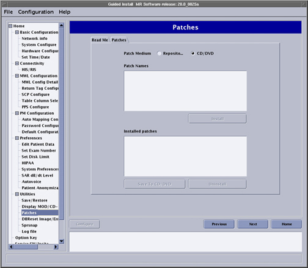
Refer to Installing Software Updates to install the patches.
After the patches are installed, archive the patches to CD or DVD media: Insert the CD/DVD media and select [Save to CD/DVD]. (This facilitates restoration of the patches from CD/DVD media if the software crashes.)
This procedure sets the default system center frequency with Manual Prescan. The frequency should be saved using [Save Frequency] on the Manual Prescan screen.
Place the Body Sphere in the center of the cradle.
Landmark on the Body Sphere.
Select the 3-Plane Localizer Scan from Protocols.
Select 50 cm for Field of View (FOV) and 10 cm for slice thickness.
Run [Automatic Prescan].
Access the Manual Prescan screen, and verify the signal peak is central in the display (at resonant frequency).
Select Frequency > Save Frequency from the top of the Manual Prescan screen.
The LVShim - Gradshim procedure is performed in LVShim PM mode. The objective is to fine tune the homogeneity of the magnet by using gradients only. The Gradshim process is performed with a sampling diameter of 22 cm DSV and the same bandwidth as Fine Shim, which depends on the quality (good or bad) of the fine tuning. Once the scan passes and all harmonics are within specification, the magnetic field is reanalyzed in Test mode automatically at 45 DSV for customer acceptance.
Phantom Setup:
Remove all coils from the cradle and phantoms from the bore.
Set up, align, and landmark the LVShim Phantom as shown below.
Illustration 2: LVShim Phantom Aligned on Patient Table

| NOTE: | Beginning in June 2009, the Nesting Plate will no longer ship with the system. |
Place the LVShim Phantom directly on the cradle, making sure it is centered in the right-left direction as shown below.
Illustration 3: LVShim Phantom Placed on Cradle

Run the LVShim tool:
If not already in place, insert the Restricted Service Key into a Host Computer USB port.
Click Service Browser.
On the MR Service Desktop, select the [PM] icon, expand the “PM Assist” option in the left navigation pane, and select LVShim (Pre-Requisite.
Illustration 4: MR Service Desktop, LVShim PM Mode
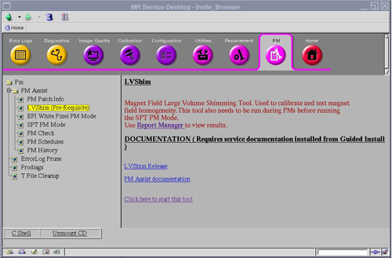
Click the link: Click here to start this tool.
Refer to the illustration below, and ensure the following are selected:
[Gradient Shim] shim type
[Auto Mode] radio button
Illustration 5: LVShim Tool

In Auto mode, the tool automatically:
Sets up the protocol and collects image data.
Calculates the harmonics and compares it with the specification.
Calculates dc offsets for X, Y and Z.
Completes multiple iterations (maximum = 5) until harmonics meets the specification.
Lists the last iteration reanalyzed at 45 DSV in Test Mode (customer acceptance specifications) in the final column.
To proceed, click the [Scan] button shown in Illustration 5.
After the scan is completed (with the Service Key still inserted), the tool compares all of the harmonics to specifications in the Test Mode.
Green cell = Passed specification
Red cell = Failed specification
When all iterations are complete and all the harmonics are within specification, click [Exit] in the LVShim window.
The Echo Planar Imaging (EPI) White Pixel tool is used to troubleshoot image artifacts. This tool should be run during the PM and prior to SPT PM Mode. Use Report Manager to view results.
Remove any phantoms from the cradle.
Place an empty head coil on the cradle.
Landmark on the head coil.
Press <Move to Scan>.
From the MR Service Desktop, refer to the illustration below and proceed as follows:
Select the [PM] icon.
If necessary, expand the “PM Assist” option, and select EPI White Pixel PM Mode in the left navigation pane.
Click on the link: Click here to start the tool.
Illustration 6: Start EPI White Pixel PM Mode Tool
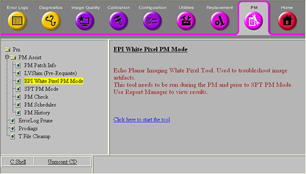
The tool runs through Head EPI WP PM, then moves the head coil out of the way, and performs Body EPI WP PM. If the test stops before the tool completes both head and body modes, view the Error Log to determine the troubleshooting path.
The EPI PM files generated by this tool can be found in the Report Manager tool. To access:
From the MR Service Desktop, click the [Utilities] icon > Report Manager, and use the password: mrgo1.
Look for file type EPT, and locate those files with the PM extension. (IBIS looks for PM files to track Planned Maintenance completion.)
SPT PM Mode is a special SPT mode that must be run as a part of the Planned Maintenance procedure. Important: SPT PM Mode should only be run after LVShim PM Mode.
| ||||
| Test functionality and system functionality may be adversely affected if the previous exam is not terminated. Click on [End Exam] to terminate any previous exam. It is not necessary to click on [New Pt] as SPT automatically enters the scan protocol when it is invoked via the MR Tools menu. | ||||
To verify the top and bottom of the head coil are properly aligned, make sure that the arrows on the NOTICE labels are aligned.
Attach the Head Coil to the cradle close to the LPCA, and plug it into the LPCA as shown.
| NOTE: | Failure to correctly position the Head Coil will result in SPT failures due to the inability to use full travel distance. If phantom positioning is an issue, it will be flagged during the “Phantom Check” at the beginning of the SPT scan. |
Illustration 7: Head Coil in Superior Location

Place the head phantom, loader shell and pad into the Head Coil, and align the laser crosshairs with the loader shell crossmarks.
Illustration 8: Aligning Laser Crosshairs with TLT Loader Shell
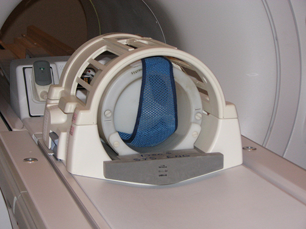
Establish the landmark, but do not Advance to Scan at this time.
Turn on the alignment lights.
Position the Body Loader on the cradle so the alignment lights are properly centered on the loader crosshair.
Place wedges on both sides of the Body Loader to prevent movement.
Run the cradle in until the display reads 1135 mm.
Illustration 9: Distance Between Head Coil Landmark and Centermark on Body Loader
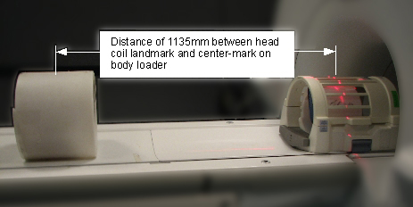
Press [Advance to Scan].
From the CSD PM screen, expand the PM Assist folder, and select SPT PM Mode.
Illustration 10: Access SPT PM Mode
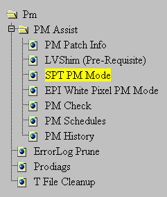
Start the SPT tool by clicking the link: Click here to start this tool.
Illustration 11: Start SPT Tool
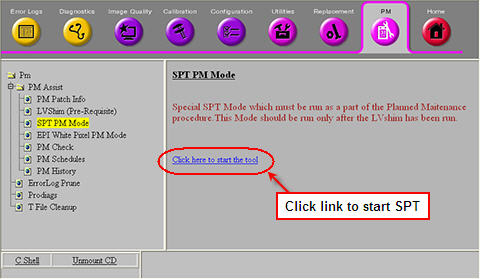
| NOTE: | The System Performance Test screen, shown below, will display. For the SPT PM Mode, all the tests are preselected and cannot be changed. |
Illustration 12: System Performance Test Screen
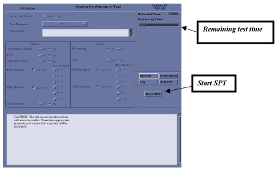
Remaining test time displays in the upper right corner of the System Performance Test screen shown in Illustration 12 and Illustration 13.
Illustration 13: Close Up of Remaining Test Time

Test progress and results will display in the lower portion of the System Performance Test screen shown below.
Illustration 14: Test Progress and Results

| ||||
| Failures must be resolved and the SPT repeated before proceeding to the PM Check. | ||||
| NOTE: | For more information on System Performance Test, including phantom set up, refer to SPT Check and Troubleshooting for XRMB. |
The PM Check tool shows the status of Planned Maintenance:
Date of last LVShim and SPT PM Mode run on the system
When the next Planned Maintenance is due
Severe failures left from the last Planned Maintenance (The clinical user will be notified in three weeks of any unresolved failures.)
Verify the PM Check completed successfully.
Expand the PM Assist folder, and select PM Check.
Illustration 15: Access PM Check Screen
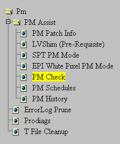
Click the link: Click here to start this tool.
Illustration 16: Start PM Check Tool

| NOTE: | PM Check will only pass if LVShim passes within 24 hours of a passing SPT PM. |
The pm show info window opens, and the information shown below displays.
Illustration 17: PM Check Tool Opens

As seen in the illustration above, Body GRE Stab. has a Severe failure. All failures must be resolved for PM Assist to be considered complete.
If the FE does not resolve Severe issues within 21 days, the system will notify the operator of the problem.
For PM Assist to be successful and complete, make sure all test results pass as shown below.
Illustration 18: Test Results Passed
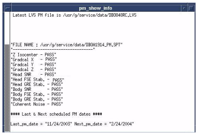
The PM Schedules tool allows the FE to select the next PM date. A date must be entered for one of the next two calendar months. (Scheduling the next PM will disable all PM-related pop-ups and attention messages to the customer until that date.)
Select PM Schedules in the expanded PM Assist folder shown below.
Illustration 19: Access PM Schedules Screen
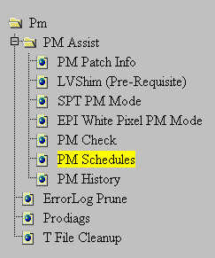
Click on the link: Click here to start this tool to start the PM Schedules tool.
Illustration 20: Start PM Schedules Tool
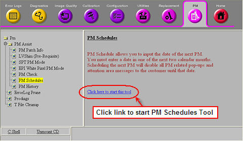
If PM was never performed on the system:
If PM was not performed on this system, the following message displays in the tool: There is no PM performed on this system at least once. Schedule a date for PM, run SPT & LVS PM tests and hit PM Check link on CSD.
When the PM Schedule screen displays, enter your Name or initials, and press <Enter>.
Illustration 21: Enter Name or Initials on PM Schedule Screen

Enter the date for the next scheduled PM, and press <Enter> on the PM Schedule screen that displays (example below).
Illustration 22: Schedule Next PM Date

If the system is following a normal PM schedule:
Check the dates the last PM was performed and when the next PM is scheduled on the PM Schedule screen that displays (example below).
Illustration 23: Last PM Performed and Next One Due

Enter the date when the next PM is to be performed, making sure the date is within the specified time limit provided by the tool, and press <Enter>.
Illustration 24: Enter Date for Next PM
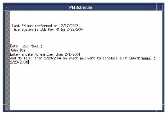
The PM History utility displays the Planned Maintenance summary information.
Click PM History (shown below) in the expanded PM Assist folder.
Illustration 25: Access PM History Screen
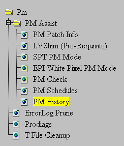
Click on the link: Click here to start this tool. (See Illustration 26 to start the PM History tool and Illustration 27 for the PM History screen.)
Illustration 26: Start PM History Tool

Illustration 27: Information on PM History Screen

The PM History screen displays the following information:
Current Date
Last Performed PM Date
Month Next PM Due
Customer Scheduled PM Date
Field Engineer PM Date
| NOTE: | Customer Scheduled PM Date and Field Engineer PM Date should show the same date. If not, discuss PM scheduling with the customer immediately. |
This section includes the following procedures:
For this check, refer to Oxygen Monitor Calibration for instructions.
Proceed to the next section if necessary.
Refer to ECG Leads Installation and Functional Check for this procedure.
Proceed to the next section if necessary.
Remove the filter grill from the scan room blower box (both shown below) by removing the twelve (12) 4mm nuts. Listen for operation of fans.
If fans are not working, consult Scan Room Blower Box Replacement procedure.
| ||||
| Do not use a screwdriver or other solid object to probe fans, or damage to fan blades may occur. | ||||
Remove and clean filter as necessary.
Illustration 28: Location of Scan Room Blower and Filter
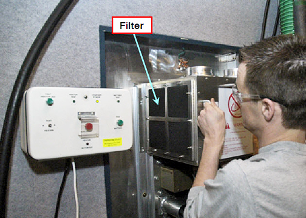
The Audio Alert (shown below) is a small box located near the console.
Illustration 29: Audio Alert

Perform the Pneumatic Patient Alert Check.
When this is complete, select the box next to the message: Is Pneumatic Patient Alert Check done?
Compress the patient warning squeeze bulb, located by the magnet enclosure and connected to the Physiological Acquisition Controller (PAC) assembly.
An audible alarm should be heard. If it is not audible, arrange for repair of the Pneumatic Patient Alert System.
| ||||
| Electrocution Hazard! | ||||
| Dangerous voltages are present inside the rf cabinet when energized. | ||||
| Remove power from the rf cabinet at the PDU and then lockout/tagout the pdu. |
Open the front cover.
Inspect each filter for dust build-up, and clean or replace filter(s) as necessary.
Close front cover.
Procedure Overview
The three laser lights (some systems only have one laser light), mounted on the front face of the magnet bore, are pre-adjusted at the factory and do not normally require realignment after the initial installation alignment procedures are completed.
Preliminary Requirements
Required Persons: 1
Preliminary Timing (mins): 15
Tools and Test Equipment: None required
Consumables: Nonmagnetic Plumb Line
Replacement Parts: None required.
Safety: No general safety information
Required Conditions: None
Alignment Light Check Procedure
Press the [Alignment] button (shown below) on the magnet enclosure's control panel to turn on the alignment lights.
Illustration 30: Alignment Light Button
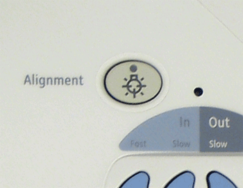
Using the string and nonmagnetic device as a plumb line, verify that the Axial alignment light at the top aligns with the marks on the bridge as shown below.
Illustration 31: Align Laser Lights Using a Plumb Line
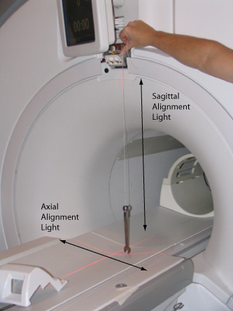
If there are no marks on the cradle, verify the Axial alignment light is plumb or pointing straight down.
The illustration below shows the laser lights properly aligned.
Illustration 32: Properly Aligned Laser Lights

| NOTE: | Some systems may not have the Coronal alignment lights located on each side of the magnet bore. If not, proceed to Step 3.d. |
Verify that the two Coronal laser lights shine across the magnet bore and align with each other and the marks. (There should be only one laser line seen; the one from the laser source on the left side aligns with the laser source from the right.)
If the Axial and Sagittal alignment lights are not aligned (Axial line does not match up with the marks on the bridge or the plumb line), then the top Axial laser source at the magnet entry has to be adjusted. If two lines are seen, the laser sources on the left and right side of the magnet entry need to be adjusted. Refer to Laser Light Alignment to align.
If not present, make two marks with a pen in the locations shown in Illustration 31. These will be reference marks for future alignment light checks.
If there is a drift in time, time adjustment is necessary. Proceed as follows:
From the Service Desktop Manager, select [Guided Install] > [Start] and type: operator at the Password prompt.
When the Guided Install window displays, click [SET TIME/DATE].
Adjust the Time, Month, Date and Year.
Select the [SET TIME/DATE ] button to reset to the new time.
Close the Guided Install window.
Remove the dust filter from front of the computer.
Clean dust filter as necessary.
Reinstall the dust filter.
Access the Common Service Desktop.
Select [Utilities] > T file clean-up.
Remove the unnecessary files.
Open a C-shell.
Type storelog and press <Enter>. This removes the unnecessary files and frees up disk space.
Check and clean the filter in the Options Cabinet as follows:
Check for dust on the PC fan (shown below) located in the rear of the Brainwave Lite cabinet.
Illustration 33: Rear of BrainWave PC
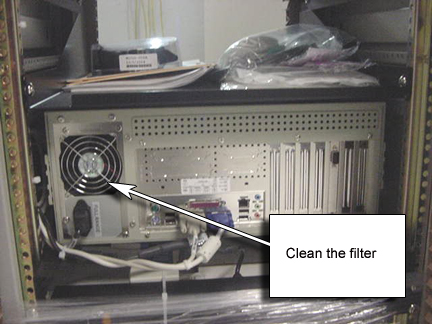
If needed, remove the dust with a vacuum.
Preliminary Requirements
Required Persons: 1
Item: Toothpick or similar nonmetallic object
Refer to Inspect Cryogen Vent for the procedure.
| ||||
| If the MRU fails the test, arrange for IMMEDIATE remedial service. Failure to have an operating MRU will prevent bringing down the magnetic field in the event of an emergency. | ||||
| ||||
| Avoid a quench of the magnet! Do NOT attempt any tests or maintenance on the MRU module unless thoroughly familiar with the process. No PM step will require pressing the [Emergency Rundown] button in the center of the MRU module. | ||||
Preliminary Requirements
Required Persons: 1
Preliminary Timing (mins): 15
Tools and Test Equipment: None required
Consumables and Replacement Parts: None required
Required Conditions: None
MRU Testing Procedure
Verify that green LED on the front panel (shown below) is illuminated, indicating the battery charger has power.
Illustration 34: MRU Front Panel Layout
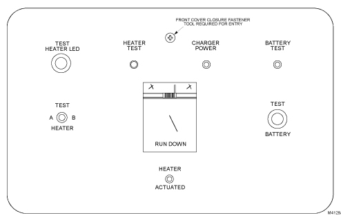
Press the TEST BATTERY switch. The green LED labeled BATTERY will illuminate if the battery is adequate.
If the LED illuminates, proceed to Step 2.g.
If the LED does not illuminate, proceed to Step 2.c.
| ||||
| Avoid a quench of magnet! Do NOT use an ohmmeter on quench heater circuits or in switch heater circuits on an energized magnet. | ||||
Open the front cover and check for 20.7 V between TP-1 and TP-2 on the circuit board.
If voltage is 20.7 V or greater, the comparator circuit or LED driver circuit requires adjustment or repair.
If voltage is below 20.7 V, proceed with next three steps.
Check for an open battery fuse F2. If blown, replace with a 2.5 amp fuse.
Visually inspect the battery for signs of leakage.
Remove fuse F2, and check the battery voltage. If battery replacement is required, order three 6 V Gel Cell Batteries P/N 46-294231P5.
Position the TEST HEATER switch to A, and verify that green LED labeled HEATER illuminates.
If the LED illuminates, proceed to Step 2.j.
If the LED does not illuminate, proceed to Step 2.h.
Press the TEST HEATER LED switch to verify LED is working. If LED is OK, but does not illuminate when the TEST HEATER switch is pressed, a serious circuit failure has been detected.
Contact your MAC Team Leader, MR RSE, or the NSC 24-hour Magnet Support Line at 1-800-321-7937 for correct troubleshooting procedure.
Position the TEST HEATER switch to B, and verify that green LED labeled HEATER illuminates.
If the LED illuminates, proceed to Step 2.m.
If LED does not illuminate, proceed to Step 2.k.
Press the TEST HEATER LED switch to verify LED is working. If LED is OK, but does not illuminate when the TEST HEATER switch is pressed, a serious circuit failure has been detected.
Contact your MAC Team Leader, MR RSE, or the NSC 24-hour Magnet Support Line at 1-800-321-7937 for the correct troubleshooting procedure.
Replace the front cover.
Preliminary Requirements
Required Persons: 1
Preliminary Timing (mins): Not applicable
Procedure Timing (mins): Not applicable
Finalization Timing (mins): Not applicable
Procedure Overview
Preliminary Requirements
Tools and Test Equipment
One each of the following tools is required:
Item: 1 in. Open-end Wrench
Item: 1-1/8 in. Open-end Wrench
Item: 1-3/16 in. Open-end Wrench
Item: 13 mm Open-end Wrench
Item: Phillips Screwdriver
Item: 9-Pin Female to 9-Pin Female Null Modem Cable
Item: RUO Meter, P/N 2171219
Depressurization Fitting (No. 12 Aeroquip)
Consumables
Item: Cotton Wipes
Replacement Parts
Item: Adsorber, P/N 2172241
Safety
No general safety information
Required Conditions
No required conditions
Sumitomo CSW-71 Compressor 4 Kelvin System (Zero Boil-Off)
Inspection of Sumitomo CSW-71 Compressor 4 Kelvin System
Check the hour meter on the front of the compressor. (Adsorber must be replaced after 20,000 hours of compressor run time.)
Review records to verify the adsorber was replaced on schedule.
If the adsorber is not scheduled for replacement, proceed to Step 4.a.v.
If the adsorber should be replaced, order a replacement adsorber (P/N 2172241), and schedule an immediate adsorber replacement. (Refer to Step 4.b for adsorber replacement).
Calculate when the next replacement is due. (Replace after 20,000 hours.)
Record the calculated adsorber replacement date in the Site Log and on the PM Schedule. Record the next replacement due date on an external tag on the compressor, indicating replacement adsorber P/N 2172241.
Connect the laptop to the Magnet Monitor using a 9-pin female to 9-pin female null modem cable. Log in using MMService for the name and MagnetMonitor for the password (both case sensitive).
Select the [Diagnose] > [graph] screen. Plot out the magnet vessel pressure for several hours, and verify that vessel pressure is cycling between 3.9 and 4.1 psi.
Select HDC (Heater Duty Cycle). Plot the duty cycle for the maximum number of days. A consistent duty cycle indicates the magnet is thermally stable. A decreasing duty cycle indicates that the magnet's thermal performance is decreasing.
If HDC is decreasing or near zero, perform the following checks:
Shield temperature (should read 35 to 42K)
RUO temperatures
| NOTE: | The magnet monitor is not accurate; there can be an error margin of 15%. RUO Meter (P/N 2171219) must be used for accurate readings. Actual values should be between 4.1 and 4.5K. The delta “T” between coldhead and recondenser RUO should be less than 0.2K. |
If the shield, coldhead or recondenser temperatures are out of specification, a thermal issue may result. Refer to the High Pressure and/or Helium Loss Troubleshooting section in the LCC Magnet Manual, Direction 2192624 to resolve any potential issues.
Select [Diagnose] > [graph] > [day].
Plot out the helium level for the maximum number of days permitted, and verify a consistent helium level.
If the helium level is decreasing, there may be a leak in the magnet. Perform leak troubleshooting as documented in the Temperature, Pressure & Leak Troubleshooting section in the LCC Magnet Manual, Direction 2192624.
Select [Diagnose] > [graph] > [day].
Plot out the water temperature and water flow for the maximum number of days.
Verify that water temperature and flow to the compressor is consistent; report any abnormalities to the Site Maintenance Staff.
Select [Diagnose] > [Table] > [CDC] (Compressor Duty Cycle), and view the last few month's data.
Verify the compressor was on for >95% of the time and within the manufacturer's requirements.
Report any abnormalities to the Site Maintenance Staff.
Check and record the compressor dynamic pressure (should be between 2.1 and 2.3 mPa).
Turn the compressor OFF, and allow the static gas pressure to equalize on supply gauge located on front of compressor.
Record equalized pressure on PM Report and on the Cryostat Performance Log (Table 10-1) in Site Log Book. (Pressure should be 236, ±3 psig at 70° F, 21° C. If pressure is not as specified, refer to the CSW-71 Compressor Operating Manual.)
| NOTE: | Charging of the compressor must be performed with 99.999% pure helium gas. |
Replacement of Sumitomo CSW-71 Adsorber
| ||||
| Electrical shock hazard! | ||||
| do not perform maintenance while compressor is connected to an electrical power source | ||||
| Disconnect the compressor unit from power source to avoid electrical shock |
Since the Oil Mist Adsorber is required to be replaced every 20,000 hours of operation, calculate when the next replacement is due.
Shut down the Cryocooler.
Disconnect the Input Power Cable from the compressor unit.
Disconnect the Supply and Return flex lines from the compressor unit.
Loosen the screws that hold the compressor side panel, and remove it (shown removed below).
Illustration 35: Side Panel Removed
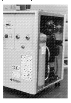
| ||||
| The Aeroquip fittings will usually bleed off 3 bar (45 psi) of helium gas pressure each time the lines are disconnected and reconnected to the coldhead or compressor. Any time the gas line connections are removed and reconnected, a helium gas recharge with 99.999% purity helium gas is required. | ||||
Use two wrenches to disconnect the adsorber Self-Sealing Coupling shown below.
Illustration 36: Adsorber Self-Sealing Coupling Disconnection
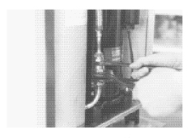
Using two wrenches, remove the nut securing the adsorber to the rear panel as shown.
Illustration 37: Nut Securing Adsorber to Rear Panel
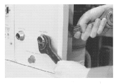
Remove the nut and washer securing the adsorber to the Base Panel of the compressor unit as shown.
Illustration 38: Base Panel Nut and Washer Removal
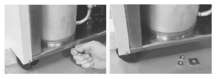
Remove the used adsorber from the compressor frame as shown.
Illustration 39: Adsorber Removal from Compressor Frame
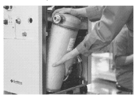
Place the new adsorber into the compressor frame.
Secure the adsorber to the base panel of the compressor frame by tightening the nut and washer.
| ||||
| The Aeroquip fittings will usually bleed off 3 bar (45 psi) of helium gas pressure each time the lines are disconnected and reconnected to the coldhead or compressor. Any time the gas line connections are removed and reconnected, a helium gas recharge with 99.999% purity helium gas is required. | ||||
Secure the adsorber to the rear panel by tightening the nut.
| ||||
| Ensure the flat rubber gasket of the self-sealing connector is clean and properly positioned before connection. Perform the first turns by hand and firmly seal the connection using three wrenches. Make the connection quickly to minimize minor gas leakage. | ||||
Connect the adsorber Self-Sealing Coupling.
Reinstall the side panel, and secure by tightening the screws.
Ensure that the pressure gauge indication is within the specified value for the type of coldhead present. Refer to the CSW-71 vendor manual if necessary.
| ||||
| Personal injury hazard! | ||||
| the adsorber is under system pressure of 230 psi when disconnected from the chassis. | ||||
| serious personal injury could result if the adsorber is not depressurized before disposal. |
To depressurize the adsorber, slowly screw the Depressurization Fitting (No. 12 Aeroquip) onto the top of the Aeroquip fitting of the used adsorber. Point the Bleed Fitting away from personnel.
Sumitomo F-50 Compressor (Zero Boil-Off)
Inspection of Sumitomo F-50 Compressor
Verify compressor pressure is within tolerance. (Refer to the illustration below.)
Illustration 40: Compressor Pressure Tolerance
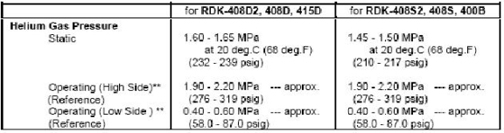
| ||||
| The adsorber for the Sumitomo F-50 Compressor should be replaced every 30,000 hours. | ||||
Review records to verify the adsorber was replaced on schedule.
If adsorber is not due for a replacement, procedure is completed.
If adsorber needs to be replaced, order a replacement adsorber, and schedule an immediate adsorber replacement. (Refer to the LCC Magnet Manual, Direction 2192624, for the part number.)
Replacement of Sumitomo F-50 Compressor Adsorber
| ||||
| potential injury hazard! | ||||
| The cryocooler (coldhead, compressor unit, compressor adsorber, and flex lines) contain highly pressurized helium gas. if punctured, an explosion or escape of gas could occur. | ||||
| Keep all sharp objects away from the cryocooler. be sure to open the purging valve gradually, and purge the helium gas from all components before disposing. |
| ||||
| Heavy Load! | ||||
| The Adsorber is moderately heavy, weighing approximately 24 lbs (11.5 kg). | ||||
| Be careful when handling it to avoid injuries. |
| ||||
| Potential Injury Hazard! | ||||
| Compressor is relatively unstable. | ||||
| To prevent injury or damage to equipment, do not place objects on or stand on top of the compressor. |
Locate the tools listed in the table below.
Table 1: Tools Required for Adsorber Replacement
| Tool | Purpose | |
| 1 | 1 in. Open-end Wrench | For Aeroquip coupling |
| 2 | 1-1/8 in. Open-end Wrench | For Aeroquip coupling |
| 3 | 1-3/16 in. Open-end Wrench | For Aeroquip coupling |
| 4 | 1/2 in. Open-end Wrench | For tightening nut on Adsorber |
| 5 | Phillips Screwdriver | For side panel of Compressor Unit |
Shut down the Cryocooler.
Disconnect the Input Power Cable from the compressor unit.
Disconnect the Supply and Return flex lines from the compressor unit.
Loosen the screws that hold the compressor side panel (shown removed below) and remove it.
Illustration 41: Removal of Side Panel

Using three wrenches, disconnect the adsorber Self-Sealing Coupling as shown below.
Illustration 42: Adsorber Coupling Disconnection

Using two wrenches as shown, remove the nut securing the adsorber to the rear panel.
Illustration 43: Removal of Nut Securing Adsorber

Loosen the nut and washer (shown in the next two illustrations) securing the Adsorber to the base panel of the compressor unit.
Illustration 44: Removal of Nut and Washer
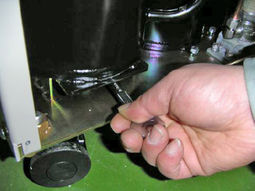
Illustration 45: Alternate View of Nut and Washer
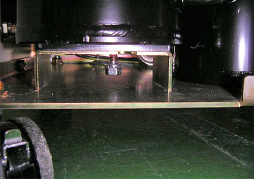
Remove the adsorber from the compressor frame as shown.
Illustration 46: Removal of Adsorber from Compressor Frame
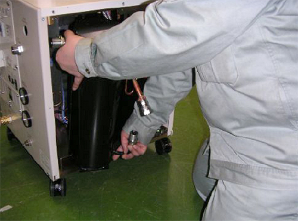
Installation of New Adsorber
Place the new adsorber into the compressor frame.
Illustration 47: Placement of New Adsorber

Secure the adsorber to the front panel by tightening the nut with two wrenches as shown.
Illustration 48: Tightening Nut to Secure Adsorber
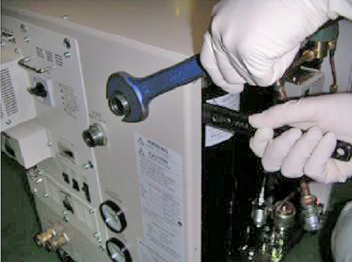
Secure the replacement adsorber to the base panel of the compressor frame by tightening the nut.
Illustration 49: Tightening Nut at Base

Connect the adsorber Self-Sealing Coupling using three wrenches.
Illustration 50: Adsorber Coupling Connection

Ensure that the pressure gauge indicates the specified value for the type of coldhead present. (See Illustration 40.) Charge the helium gas in case of a low pressure indication.
Reinstall the side panel, and secure it by the tightening the screws.
| ||||
| Personal injury hazard! | ||||
| the adsorber is under system pressure of 230 psi when disconnected from the chassis. this could cause serious personal injury if not depressurized before disposal. | ||||
| depressurize adsorber before disposing of it. |
To depressurize the adsorber, slowly screw Depressurization Fitting (No. 12 Aeroquip) onto the top of the Aeroquip fitting of the used adsorber. Point the Bleed Fitting away from personnel.
Preliminary Requirements
Required Persons: 1
Preliminary Timing (mins): Not applicable
Tools and Test Equipment: Screwdriver and/or Pliers
Consumables and Replacement Parts: None required
Required Conditions: None
Safety: No safety considerations
Using a screwdriver or pliers, open the filter clamp and remove the body coil filter shown below.
Illustration 51: Body Coil Filter
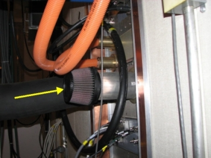
| ||||
| Do not use any chemical cleaning sprays or fluids. Clean the filter with water only. | ||||
Rinse off the air filter with cool, low-pressure water. Allow gravity to flush dirt out of the air filter by applying water to the clean side of the filter, up and down the length of the pleats.
If the filter is extremely dirty, it may be necessary to prolong or repeat the rinsing process.
If any spots of dirt remain on the filter, wet the filter down and allow a few minutes for it to soak. Repeat rinse.
| NOTE: | Use of any other drying method (such as compressed air, dryer heater or heat gun) could damage the filter. |
After rinsing the filter, gently shake off the excess water and allow the filter to dry naturally.
| ||||
| Failure to install the filter properly could lead to an improper seal, resulting in equipment damage. Follow filter OEM installation instructions. | ||||
| NOTE: | Do not apply filter oil prior to reinstalling the filter. |
Inspect the filter for damage.
If the filter is damaged, discard it; order and install a new one.
If the filter is not damaged, reinstall it in the same position prior to removal. Make sure the filter clamps are secure. (Clamps are reusable.)
Check the type of cryocooler supply header located in the HEC, and follow the appropriate instructions below.
Refer to the illustration below, and close the three yellow-handled valves in the order listed:
Lower right valve: A
Middle valve: B
Left valve: C
Illustration 52: Location of Cryocooler Compressor Valves
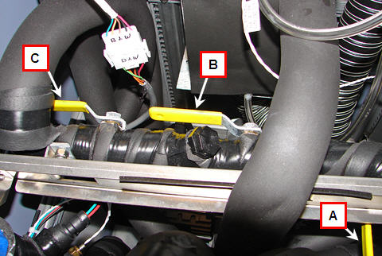
Remove the black plastic hex cap shown below.
Illustration 53: Hex Cap Over Filter
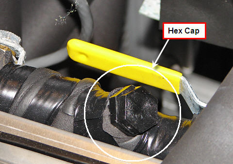
Pull out the wire mesh cylindrical screen from the exposed valve, and clean or replace it.
Proceed as follows to complete the process:
Install a clean filter.
Replace the hex cap.
Open the left valve.
Open the middle valve.
Open the right valve.
Close the Jomar Filter Ball Valve in the header. (Open and closed positions are shown below.)
Illustration 54: Filter Ball Valve Open
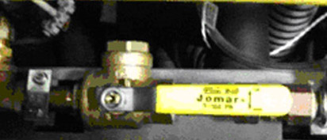
Illustration 55: Filter Ball Valve Closed
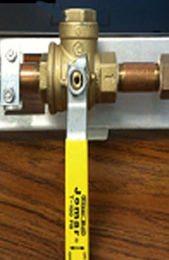
Unscrew the top of the ball valve.
Remove the snap ring from the valve with the snap ring pliers (both shown below) to expose the strainer basket.
Illustration 56: Location of Snap Ring in Valve

| NOTE: | The snap ring pliers are included in either the HEC or
Cryogen Supply Header FRU Kit. Illustration 57: Snap Ring Pliers 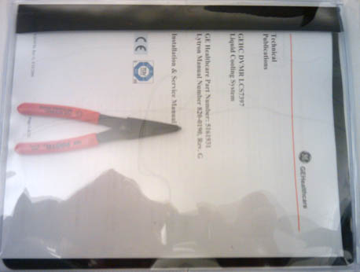 |
Remove and clean the strainer basket.
Illustration 58: Strainer Basket in Valve
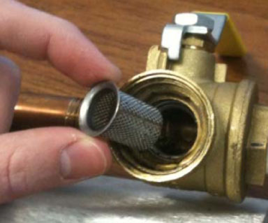
Replace the basket strainer and snap ring.
Replace the top of the ball valve, and tighten slightly past hand tight to ensure the O-ring is engaged.
Perform system shutdown, and verify that the PC is turned off.
Press one of the Emergency Stop buttons:
Operator Workspace Keyboard
Magnet Enclosure Front Cover (two buttons, left and right)
At the Magnet Enclosure, verify that all LEDs and lights on the magnet display are Off.
Verify that the AC Power on the front of the RF Amplifier (shown below) is Off.
Illustration 59: RF Amplifier Power
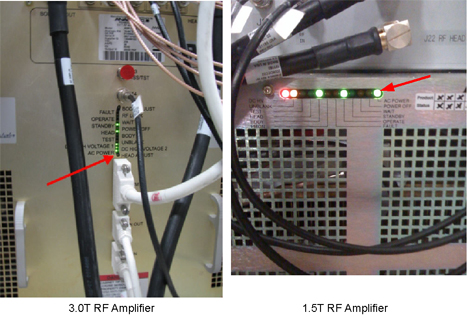
Verify that all LEDs on the Gradient (ACGD or HFD) Power Supply Module are Off.
Illustration 60: Gradient Amplifier Power
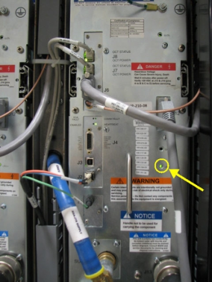
Press the [EMO Reset] button on the PDU. (The aforementioned LEDs should now illuminate.)
Repeat Steps 2 through 4 for each of the other Emergency Stop buttons.
Press one of the following Emergency Stop buttons:
Near Computer Equipment Room door
Near Magnet Room door
Power Off button
Verify that the breaker internal to the PDU trips.
Reset the input circuit at the PDU by turning it Off, then back On.
Repeat Steps 6 through 8 for other Emergency Stop buttons.
None required.